目次
動作確認を兼ねてバランスゲームを作ってみましょう。

プロジェクトの作成
エディターを起動して、プログラムやグラフィック、Godotで作成した素材をまとめて保存しておくプロジェクトを作ります。
- インストールしたフォルダーの中の
Godot_v4.2-stable_win64.exeのような名前のファイルをダブルクリックしてエディターを起動します(vの後の数字はバージョンごとに変わるので読み替えてください)
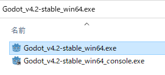
- 左上の新規をクリックします
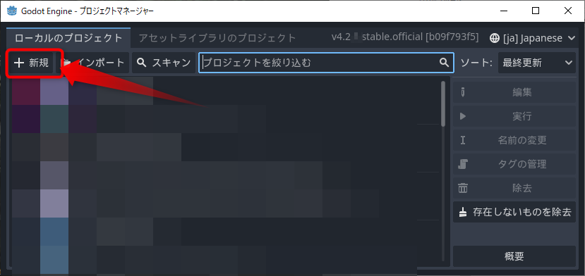
- レンダラーはデスクトップ用のForward+を選んで、フォルダーを選ぶために参照ボタンをクリックします
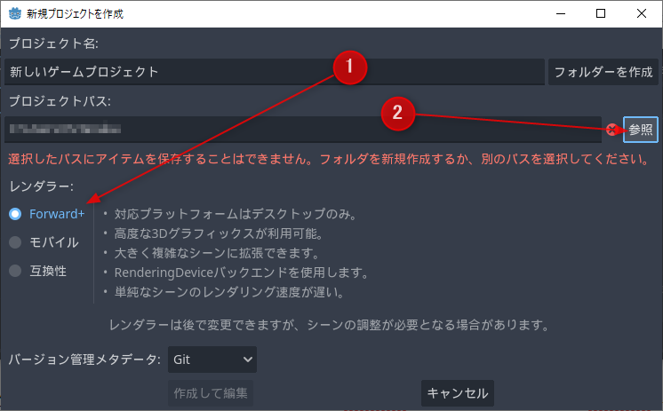
- プロジェクトを作成したいフォルダーを選択して、新しいフォルダーを作成します
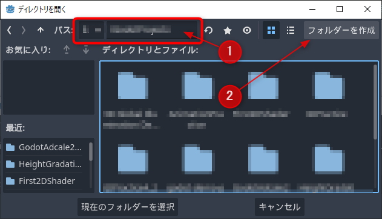
- プロジェクトフォルダー名を入力して、OKをクリックします。以下は
Balanceにした例です
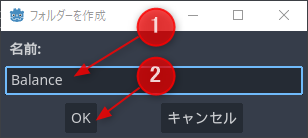
- 現在のフォルダーを選択をクリックします
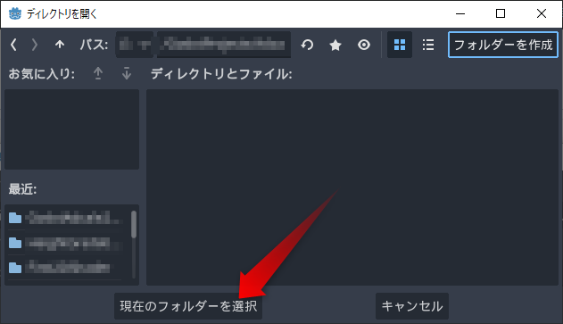
- 作成して編集をクリックします
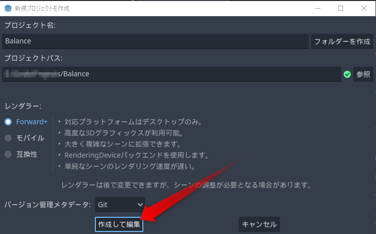
以上で新規のプロジェクトBalanceが作成されて、Godotエディターが起動します。
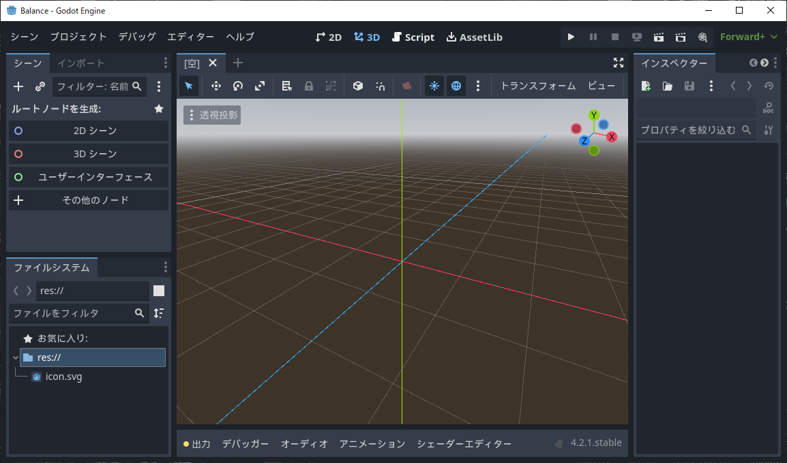
新しく何かを作る時は、同様の手順で任意の場所にプロジェクトを作成してください。
最初のシーン
プロジェクトには何も用意されていないのでこのままでは実行できません。実行するために何らかのノードを追加します。
ルートノードの作成
Godotエディターの左上のシーンドックを見ると、ルートノードを生成と書かれている下に2Dシーン、3Dシーン、ユーザーインターフェース、その他のノードというボタンが並んでいます。
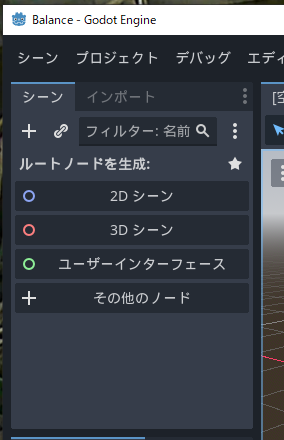
ゲームシーンをまとめるためのルートとなるノードを作ります。
- その他のノードをクリックして、一覧の一番上にあるNodeを選択して、作成をクリックします
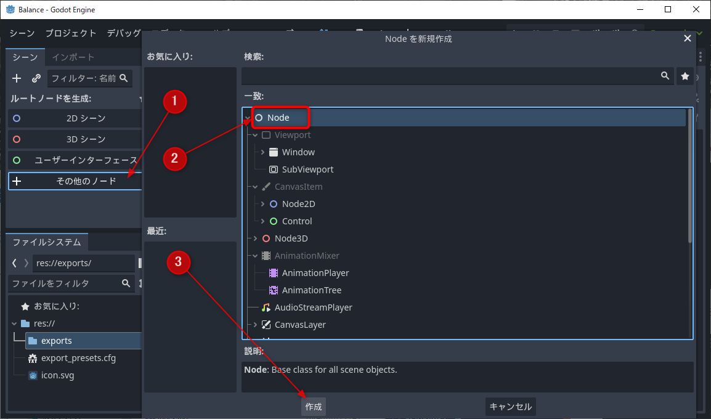
- [Ctrl]+[S]キーを押してノードをシーンとして保存します
- ファイル名を
main.tscnにして、保存ボタンをクリックします
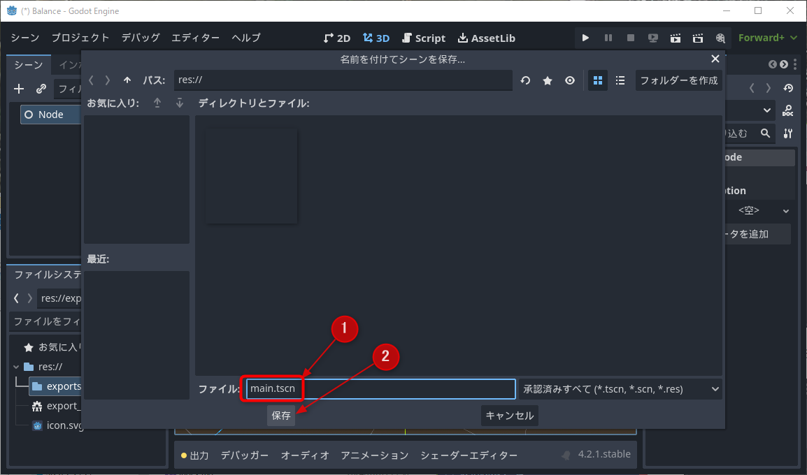
ゲームをまとめるためのルートノードを作って、mainという名前でシーンとして保存しました。ノードやシーンの説明は後ほどします。
実行
これで実行できるようになりました。実行してみましょう。
- エディター右上のプロジェクトを実行ボタンをクリックするか、F5キーを押します
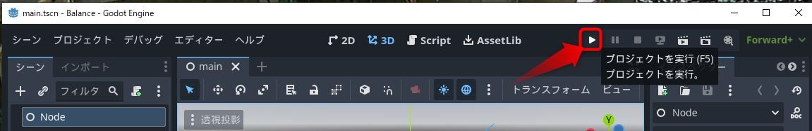
- 確認ダイアログが表示されるので、現在のものを選択をクリックします
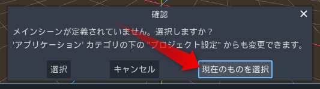
以上でプログラムが実行されます。灰色の画面が表示されるだけですが、まだ空のノードを作っただけなのでこれでOKです。
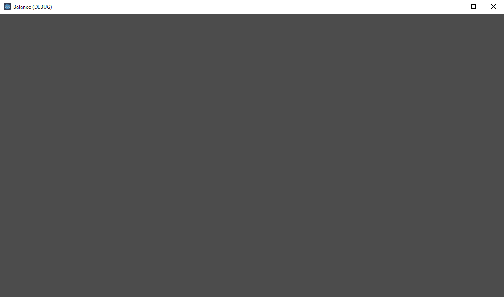
エラーが出たら
Godotは最初の実行時にエラーでよく落ちます。実行したアプリがエラーで停止したら、エラーダイアログとアプリのウィンドウを閉じます。それからGodotエディターに戻って、[Ctrl]+[S]キーでもう一度シーンを保存してもう一度実行してみてください。
何度繰り返してもダメな場合は、Godotを終了させてプロジェクトを開き直したり、実行ファイルをエクスポートするを見てエクスポートしたりあれこれ試してみてください。そのうち動くようになります。
停止
起動が確認できたらウィンドウの右上のXボタンをクリックするか、Godotエディター右上の停止ボタンをクリックするか、F8キーを押して実行を停止します。
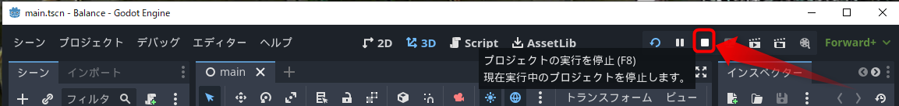
Godotの4つの基本要素
ノード(Node)とシーン(Scene)という単語が出てきました。これらに加えてシーンツリー(Scene Tree)とシグナル(Signal)を合わせた4つの要素がGodotの重要な概念です。意味が分からないと気持ち悪いという人のために簡単に触れておきます。気にならない人は先に進んでください。
ノード(Node)
ノードは「節点」や「結び目」などの意味の英単語です。コンピューターの世界では「個々の機能」というような意味合いで使われたりします。機能を持ったノードを線で結んで処理やシェーダーを作ったりします。
Godotでは、ゲームを組み立てるための最小の部品をノードと呼びます。ノードは機能を持ち、拡張性があり、階層化できます。
シーン(Scene)
ノードを一つ以上組み合わせたものをシーンと呼びます。シーンはファイルに保存できます。シーンはノードの下に配置したり、他のシーンの中に配置したり、スクリプトで生成したりできます。Unityのシーンやプレハブの双方の役割を満たせます。
シーンツリー(Scene Tree)
実行時に必要なノードやシーンをまとめたツリー構造をシーンツリーと呼びます。実行中の全てのノードやシーンがシーンツリーの子供として管理されます。
Godotを使っているうちに分かります。
シグナル(Signal)
ノード間で機能を呼び合ったり、パラメーターを渡すのに便利な機能です。ここでは利用しないので詳細は省きます。詳しくは公式マニュアルを参照してください。
まとめると
- Godotでは、様々な機能を持ったノードを組み合わせて開発します
- シーンは、ノードを編集したりツリー構造にしたものを再利用できるように保存したものです
- シーンツリーは、ノードとシーンをツリー構造で管理するものです
- シグナルで、ノードやスクリプト間のやりとりができます
というような感じです。
バランスゲームのシーンを作る
今回は動作確認がしたいだけなので、１つのシーンで手軽に作ります。作成したNodeの子供に以下のものを追加します。
- 操作するための球体
Player - カメラ
- 平行光
- バランスを取るカプセル状のオブジェクト
Capsule
操作するための球体Playerの作成
まずはPlayerを作成します。
- シーンドックに作成したNodeを右クリックして、子ノードを追加を選択します
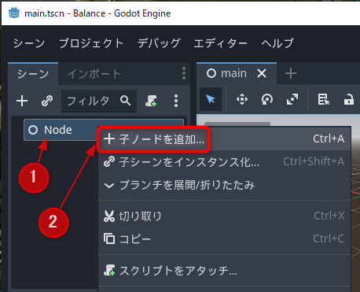
- 球体はRigidBody3Dで制御したいので、検索欄に
rigid3dぐらいを入力します。するとRigidBody3Dが表示されるので、選択して作成ボタンをクリックします
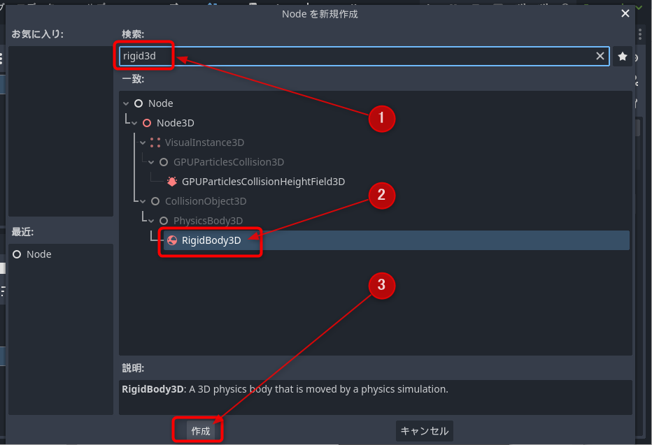
- シーンドックにRigidBody3Dが作成されるので、クリックして名前を
Playerに変更します
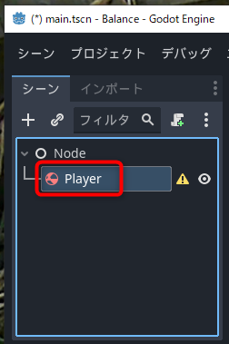
ノードドックのPlayerの右に警告マークが表示されますが、ここでは無視して先に進みます。
球体に見えるようにメッシュを子供に追加します。Godotは球体やカプセルといった基本的な形状を作る機能を持っています。
- シーンドックのPlayerを右クリックして、子ノードを追加をクリックします
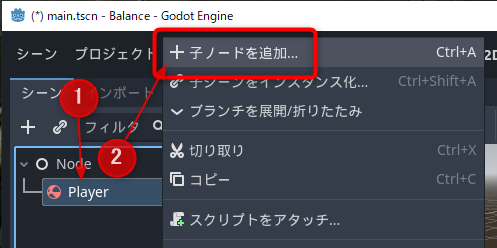
- 検索欄に
mesh3dと入力します。MeshInstance3Dを見つけて選択したら、作成ボタンをクリックします
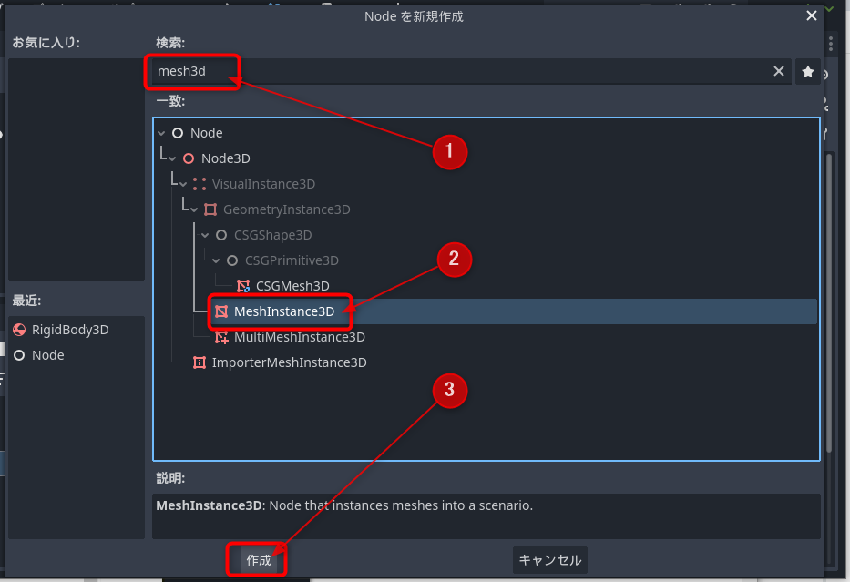
MeshInstance3Dノードを使うと3Dモデルを表示することができます。簡単な形状ならGodot上で作成できます。球体を作ってみましょう。
- エディター右にあるインスペクタードックのMesh欄をクリックします
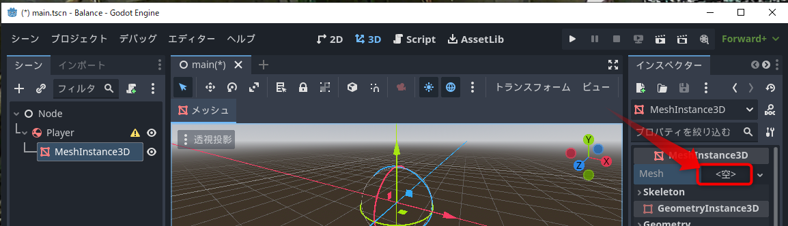
- 球体を作りたいので、新規SphereMeshをクリックします
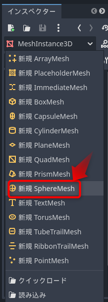
球体のメッシュが作成されて、編集画面とMesh欄に球体が表示されました。
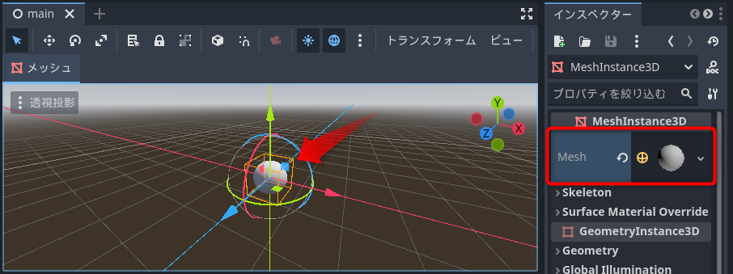
先ほど無視したPlayerの警告を解決します。PlayerはRigidBody3Dノードで作成しましたが、このノードには当たり判定の形状を持たせる必要があります。そのための警告でした。それでは見た目と同じ球体の当たり判定を作ります。
- シーンドックでPlayerを右クリックして、子ノードを追加をクリックします
- 検索欄に
shape3dと入力して、CollisionShape3Dを選択したら作成ボタンをクリックします
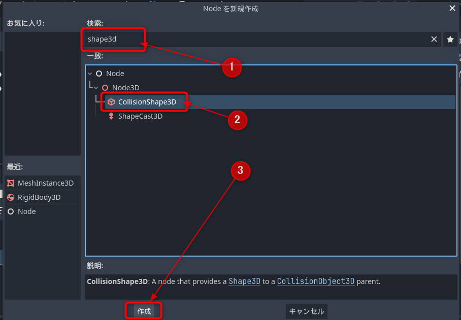
これでPlayerの警告は消えて、ColliderShape3Dに当たり判定のための形状がないため警告が表示されます。メッシュと同様にインスペクターで形状を作成します。
- インスペクタードックのShape欄をクリックして、新規SphaereShape3Dをクリックします
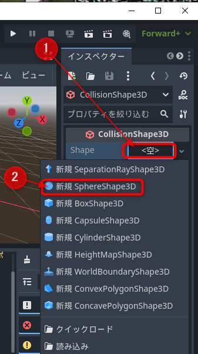
球体の当たり判定が作成できました。ノードドックの警告が全て消えます。
これでPlayerに必要なノードは揃いました。あとでスクリプトをアタッチします。
[Ctrl]+[S]キーを押して保存したら、F5キーを押して実行してみてください。
開始しても先ほどと同じ灰色の画面で、作成した球体が見えません。これは球体を映すためのカメラがないからです。
カメラを作る
カメラを作って、作成した球体を見えるようにします。
- ノードドックのNodeを右クリックして、子ノードを追加をクリックします
- 検索欄に
cam3と入力して、Camera3Dを選択したら作成ボタンをクリックします
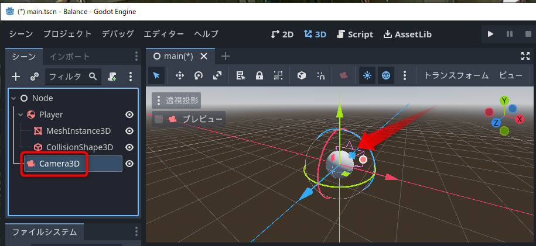
これでカメラができました。ただこのままではPlayerと重なっていて映せないので、座標を少し手前に移動させます。
- シーンドックでCamera3Dを選択します
- インスペクタードックのTransform欄を探して、クリックして開いたら、PositionのZに
10を入力してEnterキーを押します。Position欄が見つからない場合はインスペクタードックを下にスクロールさせてください
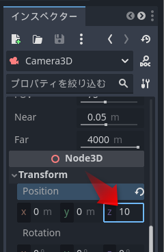
これでカメラが10m手前に移動しました。Godotの3Dは、1が1mを表します。X軸の正方向が右、Y軸の正方向が上、Z軸の正方向が手前です。
カメラを選択した状態だと、ビューポートの左上にプレビューのチェックボックスが表示されます。これをクリックしてチェックしてみてください。
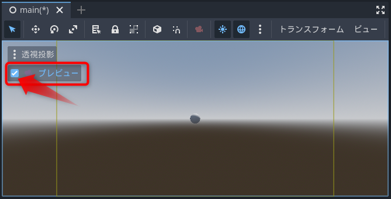
プレビューを有効にするとカメラからの画像を表示できます。薄い黄色の線が画面の表示範囲を表しています。
[Ctrl]+[S]キーで保存したら、F5キーで実行してください。球体が落下するのが見えるようになります。
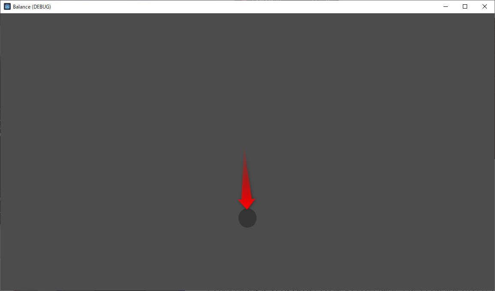
動きを確認したら停止してください。
画面が暗いのでライトを追加してみましょう。
平行光を作成する
ライトにはいくつか種類がありますが、太陽光としてよく用いられる平行光のディレクショナルライトを追加します。
- シーンドックのNodeを右クリックして、子ノードを追加をクリックします
- 検索欄に
dir3と入力して、DirectionalLight3Dを選択して、作成をクリックします
以上で平行光の作成が完了です。保存したら実行してみてください。球体が明るくなりました。
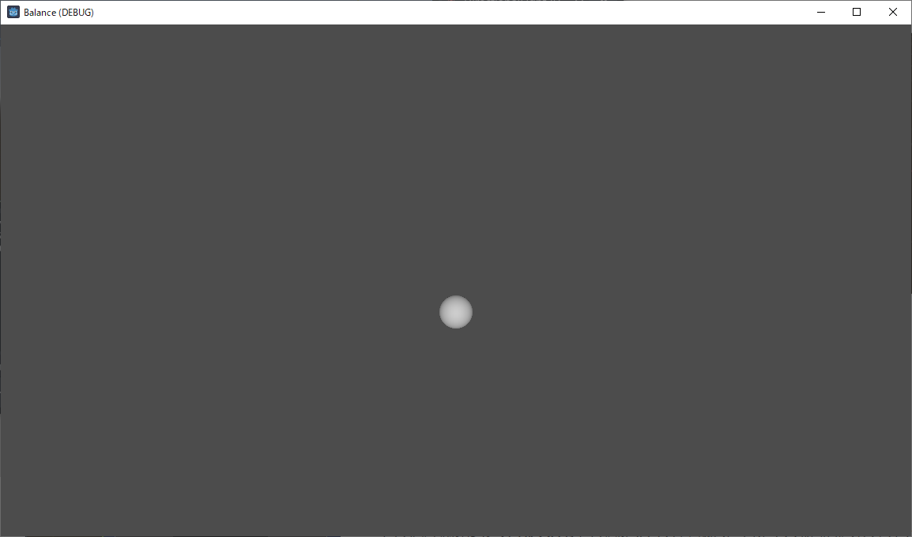
カプセルを作成する
バランスを取るためのカプセルを作成します。手順は球体を作ったときとほぼ同じです。
- シーンドックのNodeを右クリックして、子ノードを追加をクリックします
- カプセルも物理挙動させたいので
rigid3と入力して、RigidBody3Dを選択して、作成をクリックします - 作成されたノードの名前をRigidBody3Dから
Capsuleに変更します
これでバランスを取るためのカプセルを制御するノードができました。表示するためのメッシュを子に追加します。
- シーンドックのCapsuleを右クリックして、子ノードを追加をクリックします
-
mesh3などで検索して、MeshInstance3Dを選択して、作成をクリックします - インスペクタードックのMesh欄をクリックして、新規CapsuleMeshをクリックします
これでカプセルが画面に表示されます。
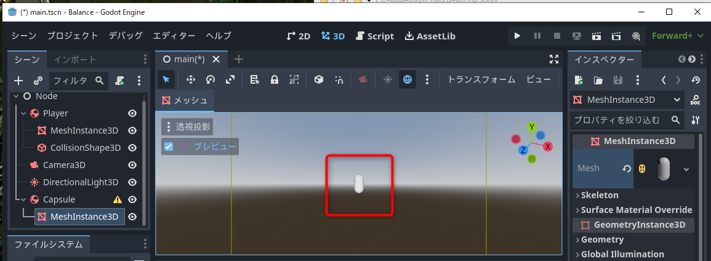
Playerの球体と同じ場所で被ってしまっていますので、上から落ちてくるように座標を変更します。
- シーンドックのCapsuleをクリックして選択します
- インスペクタードックからTransform欄を探してクリックして開いて、PositionのYに1や2の数字を入力したり、マウスで数字をドラッグして移動させて良さそうな高さにしてください。5mぐらいでよさそうです
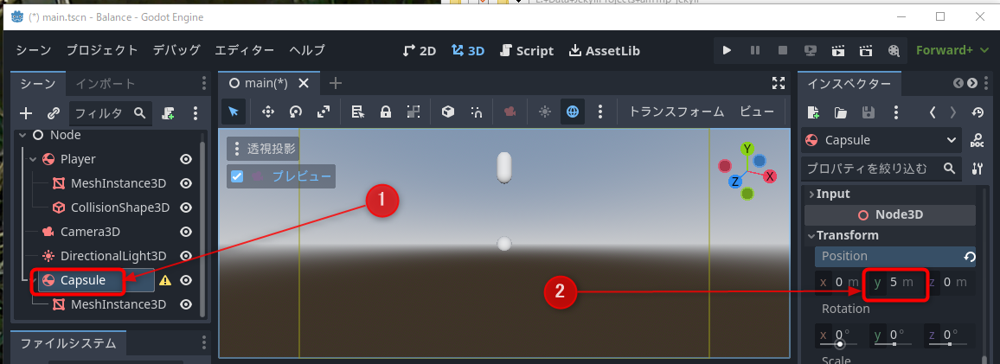
当たり判定を作成します。
- シーンドックのCapsuleを右クリックして、子ノードを追加をクリックします
-
shape3で検索して、CollisionShape3Dを選択して、作成をクリックします - インスペクタードックのShape欄をクリックして、新規CapsuleShape3Dをクリックします
以上でできあがりです。
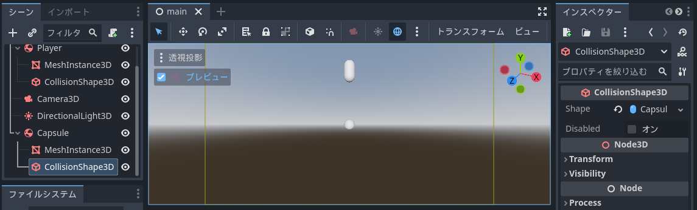
[Ctrl]+[S]キーを押して保存してから、[F5]キーで実行してみてください。プレイヤーとカプセルが落下するのが確認できます。確認したら停止してください。
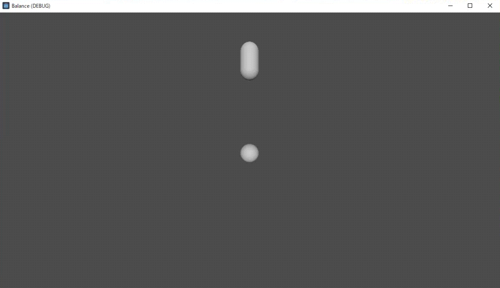
これで必要なものが揃いました。
Playerの操作
Playerをマウスで操作できるようにします。GodotはGDScriptというPythonライクな独自言語とC#が使えます。C#はまだ対応が完了しておらず動作しないプラットフォームがあるなど試験的な導入という位置づけです。GDExtentionを使うとC++が使えるようになったり、非公式ではありますが他の言語も使えるようになります。
現時点での公式の推奨スクリプトであるGDScriptで実装します。
重力の影響を切る
スクリプトを作る前に、Playerノードが落下しないようにしましょう。
- シーンドックでPlayerノードをクリックして選択します
- インスペクタードックでGravity Scale欄を探して、値を
0にします
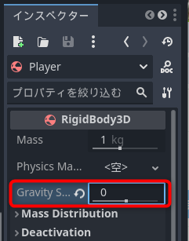
これで重力が働かなくなりました。[F5]キーを押して試してみてください。
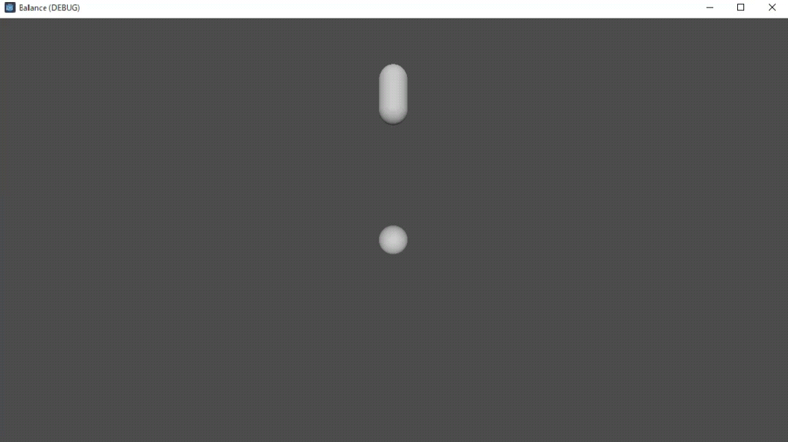
CapsuleがぶつかるまではPlayerは落下しなくなりました。
スクリプトを作成する
実際の開発ではファイル数が大量になります。シーンやスクリプトをプロジェクトフォルダー直下に置くと探すのが大変になるので、フォルダーで整理します。ここではscriptsというフォルダーを作成して、その中にスクリプトを作成してからPlayerにアタッチします。
- ファイルシステムドックのres://を右クリックして、新規作成 > フォルダーを選択します
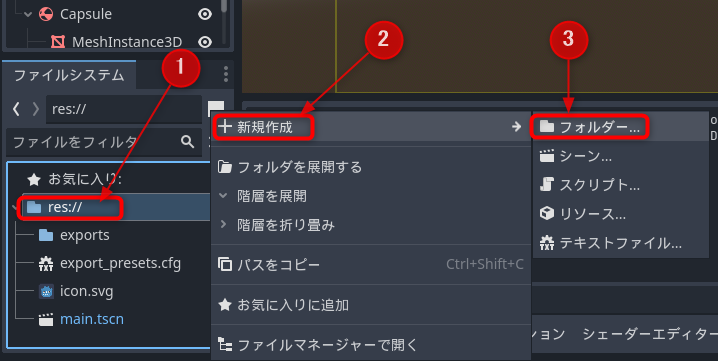
- フォルダー名を
scriptsにして、OKをクリックします
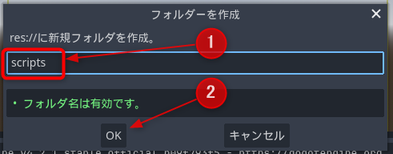
- 作成したscriptsフォルダーを右クリックして、新規作成 > スクリプトを選択します
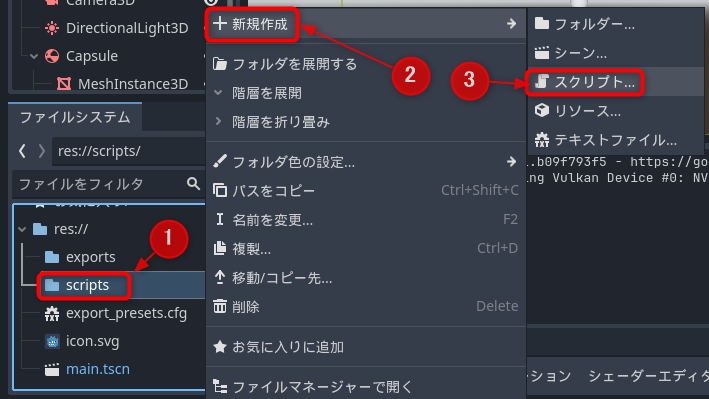
- 継承元の右にあるツリーリストアイコンをクリックします
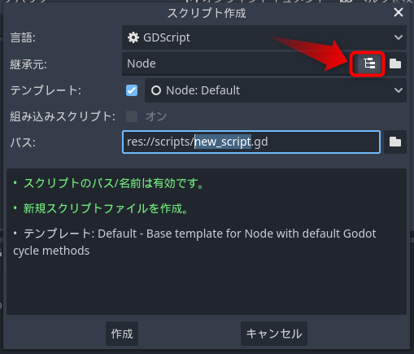
-
rigid3で検索して、RigidBody3Dを選択したら、継承ボタンをクリックします
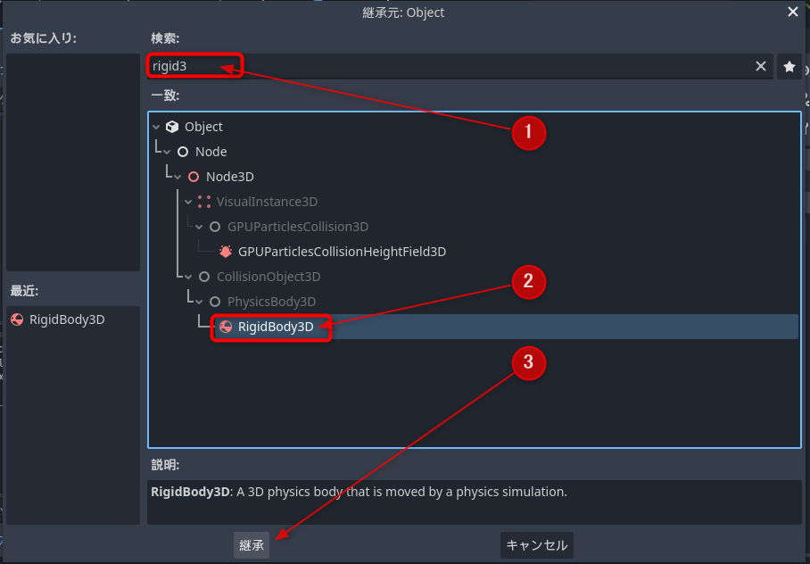
- ファイル名を
player.gdにして、作成ボタンをクリックします
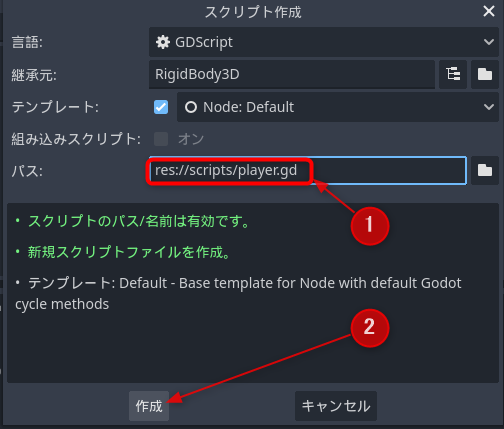
これでscriptsフォルダー内にplayerスクリプトが作成されました。これをplayerにアタッチします。
- ファイルシステムのscriptsをクリックして開きます
- player.gdをドラッグして、シーンドックのPlayerノードにドロップします
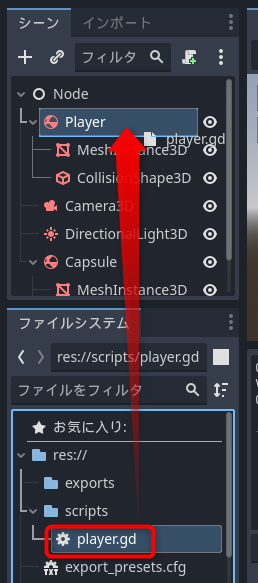
これでアタッチできました。シーンドックのPlayerノードの右にスクリプトアイコンが表示されます。
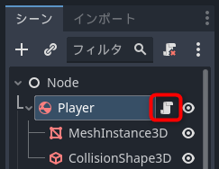
スクリプトの作成
GDScriptでマウスカーソルの位置にPlayerを動かす処理を作成します。
- ファイルシステムドックでplayer.gdをダブルクリックします
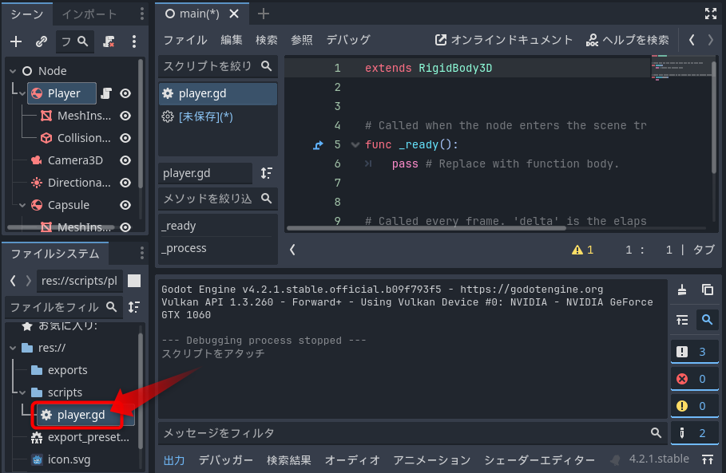
ビューポートがスクリプトに切り替わります。以下のようなコードが予め作成されています。
extends RigidBody3D
# Called when the node enters the scene tree for the first time.
func _ready():
pass # Replace with function body.
# Called every frame. 'delta' is the elapsed time since the previous frame.
func _process(delta):
pass
1行目は「ノードのRigidBody3Dの機能を利用します」という意味です。
5行目のfunc _ready():は、ノードが読み込まれて準備ができたら１回実行されるコードを書く場所です。次の行のpassは「処理はあとで書くのでパスします」というような意味で、何もしない命令です。GDScriptでは関数には何らかの実装が必要なので、あとで実装するような場合はこのようにpassと書いておきます。
10行目のfunc _process(delta):は、画面が1回描画されるごとに実行されるコードを書く場所です。deltaには前回実行してから今回実行するまでの経過時間を秒数でGodotが渡してくれます。これも内容はpassなので何もしません。
GDScriptの書き方
スクリプトを書くにあたっての注意事項です。
- 半角英数で入力してください
- 字下げは見本通りにTabキーで入力してください
全角で入力していると、うっかり全角文字が残ってしまう場合があります。特に全角スペースは発見が難しいです。余計な問題を防ぐために、半角英数モードで入力してください。
GDScriptはC言語やC#と違い、インデント（字下げ）が意味を持ちます。インデントを省略したり、数が多かったりするとエラーになります。これがPythonライクと言われる理由です。スペースの数の違いでもエラーになるのでTabキーで字下げをしてください。
実装
それではプログラムを実装します。自動的に用意されていた_ready()と_process(delta)は今回は使わないので削除して以下のようにしてください。
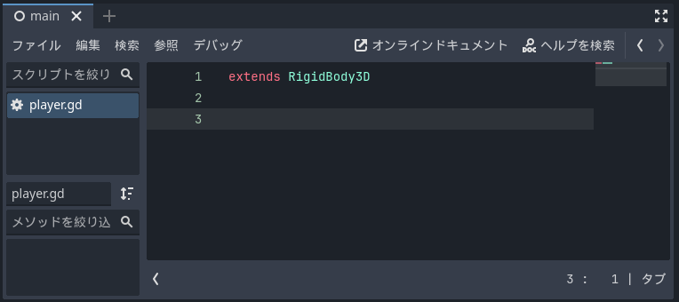
以下のようにスクリプトを入力するか、コピペしてください。
- 大文字小文字もその通りに入力してください
-
#からはじまる行は省略して構いません
extends RigidBody3D
@onready var viewport := get_viewport()
@onready var camera := get_viewport().get_camera_3d()
func _integrate_forces(state):
# マウス座標の取得
var mouse_position = viewport.get_mouse_position()
# カメラからの距離
var z = camera.global_position.z - global_position.z
# カメラからの距離に対するマウスのワールド座標
var world_position = camera.project_position(mouse_position, z)
# 現在位置からの位置ベクトルを求める
var to = world_position - global_position
# 速度に変換して設定
state.linear_velocity = to / state.step
以上できたら、[Ctrl]+[S]キーで保存して、[F5]キーで実行してください。マウスでPlayerが操作できるようになります。カプセルを落とさないように操作してみてください。
まとめ
プロジェクトを作成して、マウスで操作する簡単なバランスゲームを作ってみました。以下、やったことです。
- プロジェクトの作成
- 実行と停止
- 物理シミュレーションをさせるための球体やカプセルの作成と設定
- カメラとライトの作成
- GDScriptの作成
インストールしたGodotエディターの動作確認と、簡単なゲーム開発のとっかかりを試しました。インストールが完了して動作が確認できたら、公式マニュアルやYou Tubeの講座がたくさんありますので色々と動かしてみてください。
Godotは3と4でかなり仕様が違います。マニュアルやチュートリアルには古い情報が残っている場合があります。動作しないことがあれば古い情報の可能性があるので、新しい情報を探してみてください。
この後
この後に進むと良さそうな情報をご紹介します。
- バランスゲームのGDScript解説
- 作成したスクリプトの解説ページです
- Godot公式ドキュメント
- 公式ページのドキュメントです。情報量が多いので一気に読み切るのは難しいですが、重要な情報が掲載されていますので少しずつでも目を通した方が良いです
- 全て日本語化できてはいませんが、翻訳は日々進んでいます
- PROG Inc. ゆるっとはじめる Godot Engine ゲームプログラミング 入門編
- 技術書典でPROG Inc.さんが販売している同人の技術書です
- 2024年1月時点では３冊が販売されています。公式マニュアルなどでGodotの基本操作がわかっているなら好きなやつを選んでください。2と3は1を終えている前提なので、基本操作から学びたい場合は1のクリッカーゲームを選ぶことをお勧めします
- GDQuest
- 英語ですが、評判のGodotのYouTubeチャンネルがGDQuestです。Godotエディター上で学べる学習素材などを公開しています。